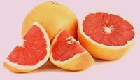

Грейпфрут

Грейпфрут — плод субтропического вечнозеленого дерева рода цитрусовых.
Диаметр в среднем составляет 10–15 см, кожура желтая, мякоть красного
оттенка. Вкус горький, чему способствует тонкая пленка вокруг каждой
дольки. Если ее убрать, то горечь сильно снизится.